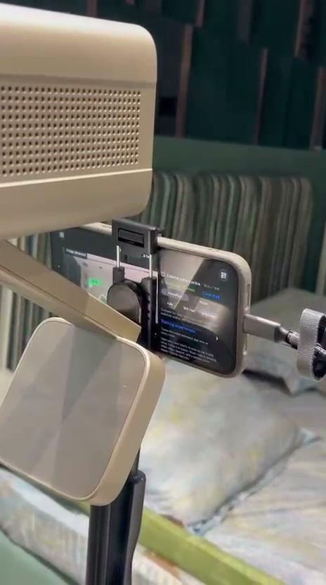

AN EXPERIMENT IN REAL-WORLD PLAY
Your room.
New rules.
I made an app that turns a wall into a game. Your hands are the controllers. The living room is the playground.
A slightly unusual side project by Abdul Rashid
game on.
you already have.
Small setup.
Big play energy.
01 — THE PLAYGROUND
One wall.
A few possibilities.
Defend a city. Make imaginary soup.
Get distracted by a ball.
There’s more than one way to play.
Actual footage from the experiment.
No headsets. Just a very busy wall.
Trace a line with your hand and turn the projected space into a canvas. Leave the wall paint exactly where it is.
Your hands.
That’s the controller.
The phone tracks your hands in real time and maps them into the game.
No hands? It pauses.
Even the wall understands breaks.

02 — FROM ROOM TO PLAYFIELD
Set it down.
Bring it to life.
- 01
Mount & connect
Mount your iOS device on a tripod, connect the projector, and point the setup at your wall.
- 02
Let it find the space
AprilTags help the app locate the projected area and map the real room into the game world. Calibration happens automatically.
- 03
Step in. Start playing.
Move your hands and watch the game respond. Moved the setup? Hit recalibrate and you’re ready again.
BEHIND THE EXPERIMENT
Why I’m building Playfield.
From childhood games to a wall that responds to your hands. The story behind the experiment.
03 — WHAT SHOULD IT PLAY NEXT?
Got a weird idea?
I’m all ears.
Playfield is an experiment I’m building.
Say hello, share an idea, or follow what happens next.